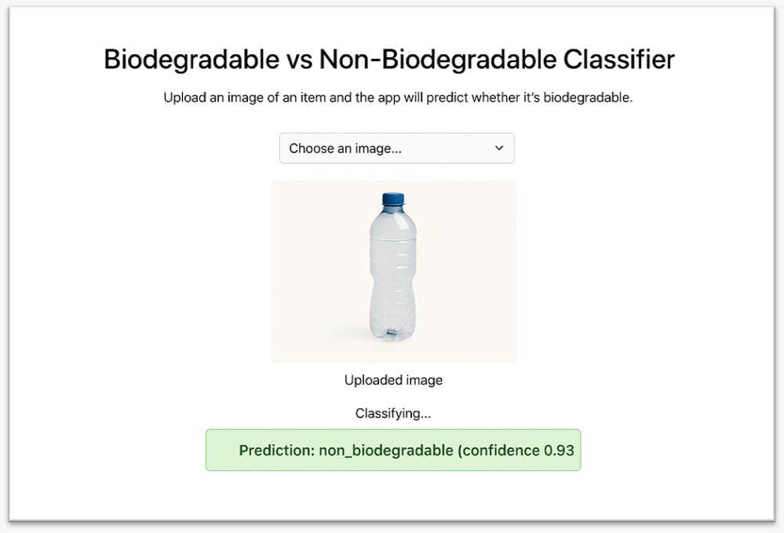

Projects

AI / ML
Waste Segregation using CNN
Designed and trained a Convolutional Neural Network to classify degradable and non-degradable waste from images, supporting sustainable waste management.
Tech: Python, CNN, Image Processing
 Java
Java
Plant Diary Application
Developed a Java Swing desktop application to record, manage, and view plant details using an intuitive GUI.
Tech: Java, Swing
.png) Data Analytics
Data Analytics
Data Cleaning & Analysis
Cleaned and analyzed datasets to extract insights, trends, and patterns using analytical tools.
Tech: Python, SQL, Excel